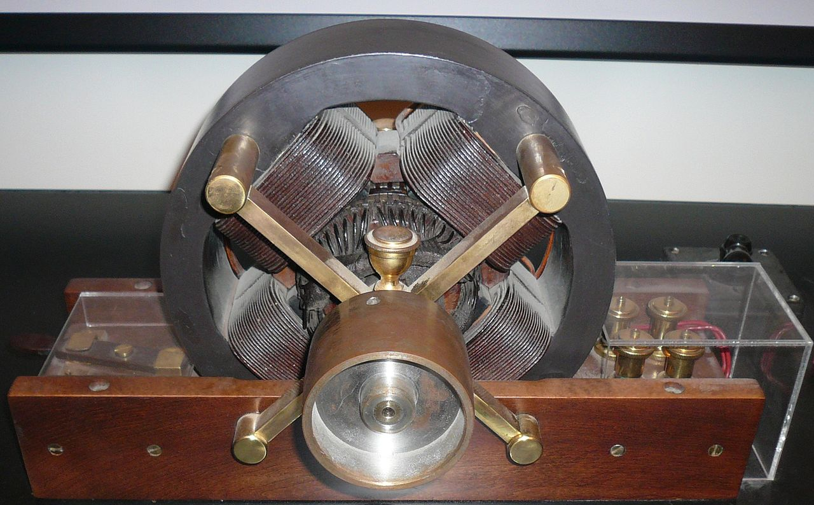

Godina: 1888.
Indukcijski motor je izmjenični elektromotor u kojem se električna struja u rotoru potrebna za stvaranje okretnog momenta dobiva elektromagnetskom indukcijom iz magnetskog polja namota statora. Prve trofazne indukcijske motore bez komutatora izmijenili su neovisno Galileo Ferraris i Nikola Tesla, 1885. i 1887. U svibnju 1888. Tesla je Američkom institutu inženjera elektrotehnike (AIEE) predstavio tehnički rad "Novi sustav za motore i transformatore na izmjeničnoj struji" koji opisuje tri motora: jedan s četveropolnim rotorom, drugi s namotanim rotorom i treći pravi sinkroni motor.